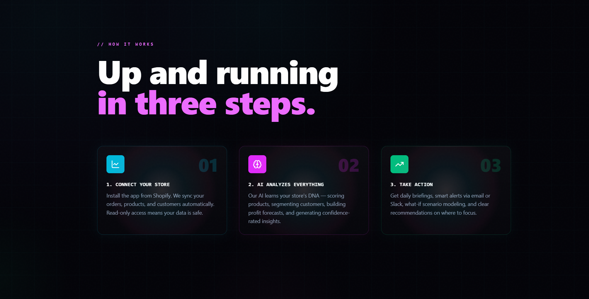
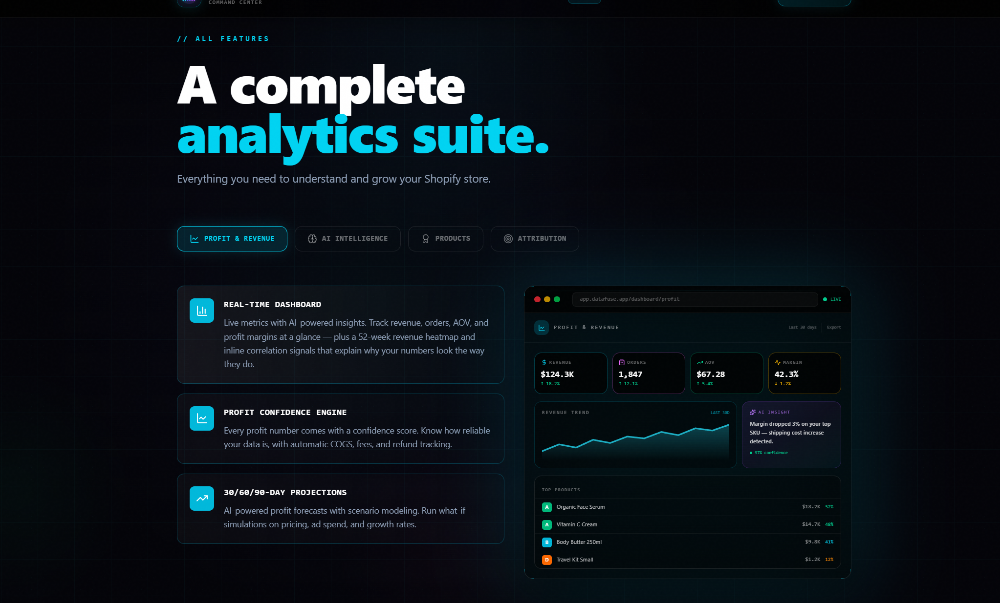
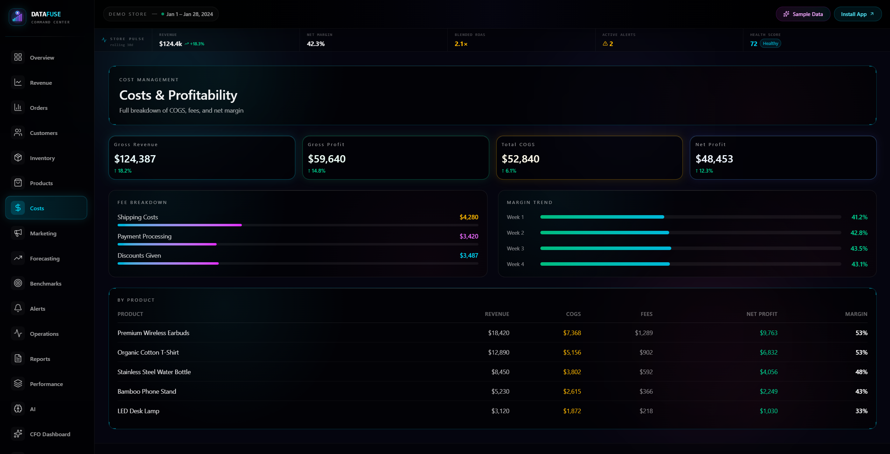
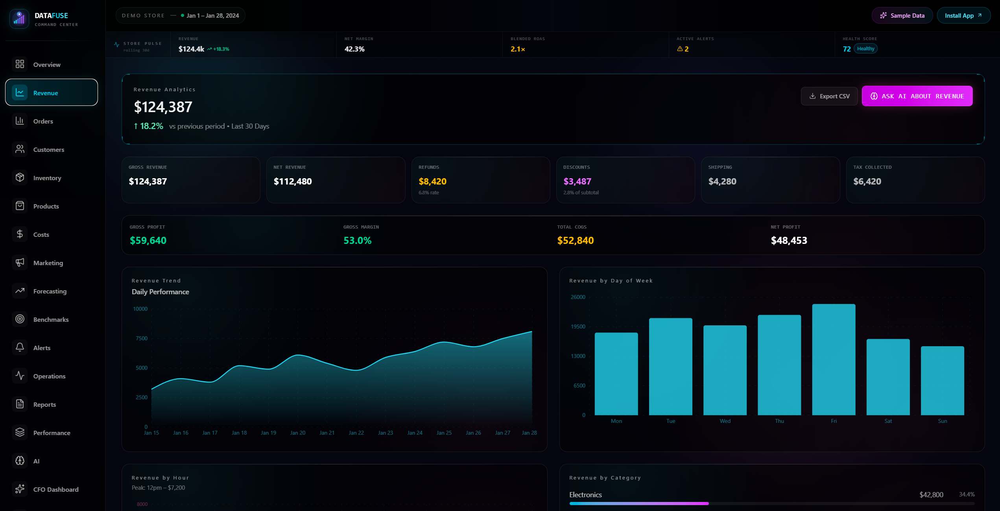

About This Project
A real-time profit intelligence platform for Shopify stores — because knowing your revenue means nothing if you don't know what you actually kept. DataFuse is a full-stack Shopify SaaS I built from scratch that reconciles ad spend, platform fees, COGS, and refunds against live order data to show merchants their true net profit. The headline metric is Profit ROAS — return on ad spend calculated on margin, not revenue — because a 4x ROAS on a 20% margin product is often a money-losing campaign in disguise.
The Problem
Most Shopify merchants are flying blind on profitability. They log into Shopify and see revenue. They log into Meta and see ROAS. They check their bank account and wonder where the money went. The gap between those three numbers is COGS, transaction fees across multiple payment processors, ad spend, refunds, and shipping — none of which Shopify's native analytics surfaces in one place.
Existing tools that solve this either cost $200–$500/month (Triple Whale, Northbeam) or don't go deep enough on the ad data. DataFuse sits in between: a full profit stack for stores spending $1k–$15k/month on ads, at $29–$149/month.
How It Works
A merchant installs the app, connects their ad accounts (Meta, Google, TikTok), and enters their COGS — either manually per product or via CSV import. From that point forward, DataFuse pulls live Shopify orders, reconciles them against a fee engine that handles Shopify Payments, Stripe, PayPal, Square, Klarna, and Afterpay, then layers in ad spend from the platform APIs to produce a real-time P&L. Every number drills down: revenue by channel, profit by product, ROAS by ad creative.
The attribution layer is first-party. A lightweight pixel on the storefront captures fbclid, gclid, ttclid, and UTM parameters at the session level, stitches them server-side to Shopify orders, and feeds five attribution models — first-touch, last-touch, linear, time-decay, and position-based — so merchants aren't solely relying on Meta and Google's self-reported numbers post-iOS 14.
On top of the data layer sits an AI layer: a daily briefing that summarizes what moved and why, a CFO-style scenario modeler, and a natural-language concierge that answers questions like "which ad creative drove the most profit last week?" against the store's own data.
Under the Hood
The core data challenge was reconciliation correctness at the order level. Orders arrive via Shopify webhooks, get written to Neon PostgreSQL through Prisma, and immediately trigger a fee calculation pass. The fee engine handles six payment processors — each with different rate structures (flat, percentage-plus-fixed, or volume-tiered). Fees are materialized per order at write time rather than computed at query time, so historical P&L stays stable even when rate structures change. COGS are stored with full version history tied to a date range, so margin calculations reflect what the merchant actually paid at the time of sale rather than today's current cost.
Ad data syncs on a scheduled cron: Meta Marketing API at the ad level (campaign → ad set → ad, per day), Google Ads and TikTok Ads at the campaign level. The Meta sync was the hardest to get right — the Insights API returns data in the account's marketing timezone while Shopify orders are in UTC, and the join between them has to normalize both into a common timezone before aggregating, or you get phantom day-boundary mismatches that silently corrupt ROAS numbers.
The first-party attribution pixel captures fbclid, gclid, ttclid, and full UTM parameters on page load and posts them to a lightweight pixel endpoint. Server-side, each hit creates a session record keyed to a browser fingerprint. When a Shopify orders/create webhook fires, the attribution engine queries open sessions for that fingerprint, ranks touchpoints by recency and source priority, and writes a resolved attribution record. A second pass then applies all five multi-touch models, distributing fractional credit across the full conversion path. This matters because Meta's own reported ROAS and pixel-attributed ROAS often diverge by 20–40% post-iOS 14.
The AI layer is built on the Claude API with prompt caching enabled on the system prompt and static grounding context, which cuts per-briefing token costs significantly. Each briefing prompt is constructed dynamically from a fresh query window of the merchant's actual KPI data — not cached summaries — and returns structured JSON: KPI deltas with direction and magnitude, anomaly flags with likely causes, and prioritised action items. The concierge Q&A endpoint translates natural-language questions into parameterised database queries at runtime and grounds Claude's response in the live query result rather than letting it hallucinate figures.
Upstash Redis sits in front of all public-facing endpoints enforcing sliding-window rate limits, and caches hot dashboard aggregations with short TTLs so the UI stays fast on stores with 50k+ orders without hammering Postgres on every page load. The entire stack runs on Vercel serverless with Neon's connection pooling — compute and database both scale to zero when idle, keeping infrastructure cost proportional to actual usage.
Platform Features
P&L & Profitability
Attribution & Ad Analytics
Customer Intelligence
Inventory
AI Layer
Alerts & Automation
Multi-Store